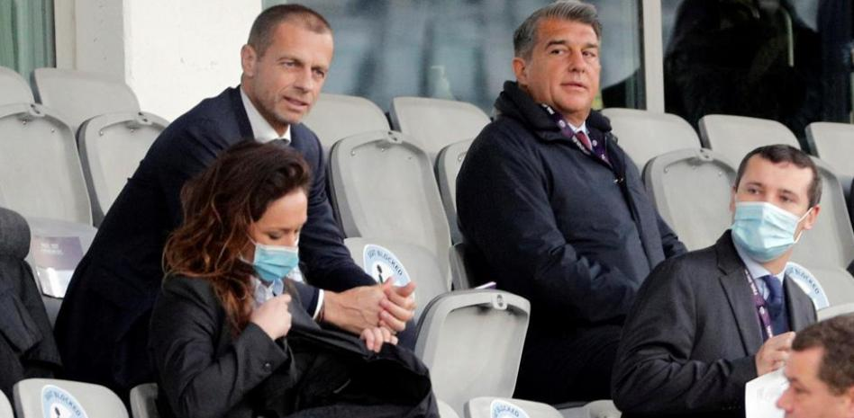

La selección ha realizado el último entrenamiento en Las Rozas de cara al duelo del sábado en Málaga ante Noruega. La selección se ha ejercitado esta mañana en Las Rozas en la última sesión en la Ciudad del Fútbol de cara al duelo del sábado ante Noruega en Málaga. Un encuentro que será el estreno de De la Fuente al frente de la absoluta. Luis de la Fuente tiene a todos los jugadores listos para es partido ante Noruega. Laporte ya está recuperado de su congestión nasal que le impidió entrenar ayer por la mañana y Bryan Gil también ha entrenado a pesar de que ayer por la tarde no se ejercitó por unas molestias.La selección no se ejercitará esta tarde y está previsto que mañana a las 11.30 horas salga rumbo a Málaga donde a partir de las 18.15 horas hablarán Morata y De la Fuente ante los medios y a las 19.00 horas, la selección se ejercitará en el césped de La Rosaleda.
Esta es la primera lista de convocados de Luis de la Fuente como seleccionador español absoluto:

La UEFA nombrará a uno o dos inspectores disciplinarios que se encargan de recabar la información al FC Barcelona y a la Federación Española de Fútbol. Lo normal es que esperan a que el Barcelona realice su inscripción a finales de mayo y junio de cara a la próxima edición de la Liga de Campeones para tomar una decisión y que podría pasar por la exclusión de la competición.
Acabamos de conocer que la UEFA ha abierto una investigación al Barcelona por el caso Negreira. Un procedimiento apoyado en el artículo 34 del Código Disciplinario que implica que el máximo organismo europeo recabará información respecto a toda la polémica que rodea al pago de cantidades del club azulgrana a Enríquez Negreira. Lo normal es que el máximo organismo europeo que designe a uno a dos inspectores disciplinarios que se encarguen de ello. La actuación responde ante el impacto que está teniendo todo lo que se está publicando.Y, como os contamos el pasado 11 de marzo, no será hasta finales mes de mayo o principios de junio cuando UEFA podría actuar. Siempre en base al artículo 4.2 el Reglamento de la Liga de Campeones que dice lo siguiente: "Si, sobre la base de todas las circunstancias de hecho y de la información de que dispone, la UEFA concluye a su entera satisfacción que un club ha estado implicado directa y/o indirectamente, desde la entrada en vigor del apartado 3 del artículo 50 de los Estatutos de la UEFA, es decir, el 27 de abril de 2007, en cualquier actividad dirigida a organizar o influir en el resultado de un partido a nivel nacional o internacional, la UEFA declarará a dicho club no elegible para participar en la competición. Dicha inelegibilidad sólo será efectiva durante una temporada futbolística. Al tomar su decisión, la UEFA puede basarse en una decisión de un organismo deportivo nacional o internacional, de un tribunal arbitral o de un tribunal estatal, pero no está obligada a ello. La UEFA puede abstenerse de declarar a un club no elegible para participar en la competición si está convencida de que el impacto de una decisión tomada en relación con las mismas circunstancias de hecho por un organismo deportivo nacional o internacional, tribunal arbitral o tribunal estatal ya ha tenido el efecto de impedir que ese club participe en una competición de clubes de la UEFA".El proceso es el siguiente. Una vez concluya la competición, el FC Barcelona recibirá del máximo organismo los documentos de admisión en la competición para la próxima temporada. Algo que podría hacer, de seguir así, como campeón de Liga. En esos documentos es donde el FC Barcelona deberá comunicar a la propia UEFA si está inmerso en un procedimiento como el que establece el citado artículo 4.2 anteriormente mencionado. Lo lógico es que el club azulgrana haga constar en el mismo, más cuando ya existe esta acusación del fiscal realizada ayer mismo. Será a la recepción del mismo cuando la propia UEFA deberá decidir qué medidas adopta en función de esta investigación que acaba de abrir al equipo azulgrana. Siempre en el caso de que decidiera excluir al club azulgrana de la competición europea para la próxima temporada. Atendiendo a la celeridad que requeriría y al tratarse de cuestiones de admisión, lo normal es que vaya directamente a la Comisión de Apelación de la UEFA. Y será este organismo quien lo determine. En el caso de que finalmente hubiera sanción al club, siempre quedará la opción de acudir al TAS, como la última instancia jurídico deportiva. Bien es cierto que el TAS sí tiene recogido y aceptado que puede haber sanciones cuando no se garantice la limpieza o la imagen de una competición. La integridad de la misma. También podría determinar la UEFA que no adopta decisiones mientras que esté abierto el procedimiento penal. 